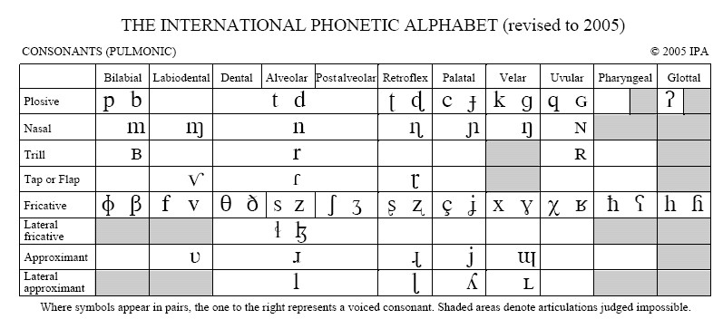
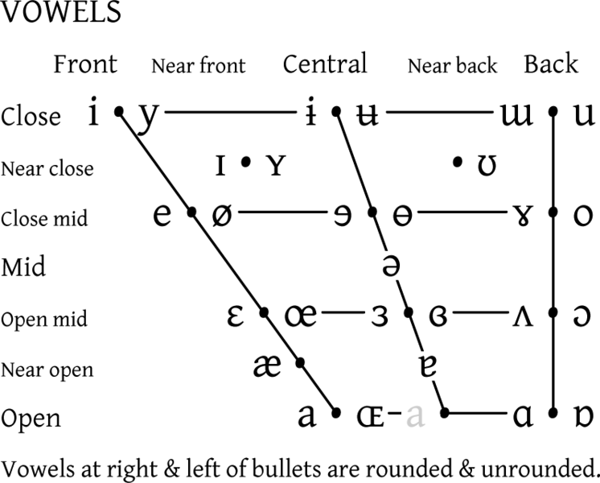

Pinyin
IPA
The International Phonetic Alphabet(IPA) was invented to allow people to read and understand the pronunciation of any language regardless of whether or not they can read the written version of the language. Each character has a specific sound or phoneme associated with it. Different languages use different sets of the characters, but there are no overlaps and it can be used for any language.
For this reason the IPA is helpful in explaining how accents affect percepted speech.
These are the consonants of the American English set of the IPA.
These are the consonants of the American English set of the IPA.
